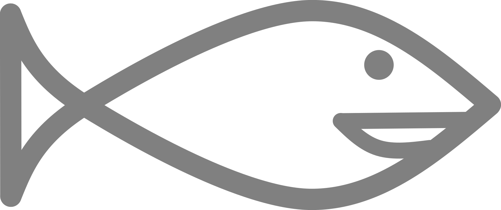

1 Zichtbare waterkwaliteit
De kwaliteit van het water is vaak herkenbaar aan wat je ziet. De kleur van het water vertelt over de processen in het water. De planten en dieren die je ziet – of juist niet – vertellen over het water waarin ze leven.
Waterkwaliteit is zichtbaar

Als je goed naar het water kijkt, dan kun je daarmee een eerste indruk krijgen van de waterkwaliteit. Is het water helder en groeien er waterplanten? Of is het water juist heel troebel of ligt er een dikke laag kroos op het water? Dat zegt allemaal iets over de waterkwaliteit. Een goede waterkwaliteit kun je vaak herkennen doordat het water dan helder is en er onder water planten groeien.
Helderheid en kleur
De eerste indruk van de waterkwaliteit kun je krijgen door te kijken naar de helderheid en de kleur van het water. Helder water waar je makkelijk doorheen kijkt is een teken van een goede waterkwaliteit. Het zonlicht dat ook waterplanten nodig hebben kan dan goed in het water doordringen.
Het helderste water in ons gebied is te vinden in de Zevenhuizerplas tussen Rotterdam en Zevenhuizen. Soms kun je hier wel meer dan 10 meter diep (!) het water in kijken.
Als het water niet zo helder is, komt dat doordat er kleine deeltjes in het water zweven. Hoe meer deeltjes, hoe troebeler het water.In troebel water kunnen waterplanten niet zo goed groeien. De kleur van het water wordt bepaald door het soort deeltjes in het water. In ons gebied is het water soms bruin , groen, of roestbruin.
Bruin water (1.1 (a)) wordt meestal veroorzaakt doordat er veel slibdeeltjes in het water aanwezig zijn. Deze slibdeeltjes komen in het water door afstroming tijdens regenbuien of worden opgewerveld van de bodem, bijvoorbeeld door vissen die de bodem omwoelen.
Groen water (1.1 (b)) wordt meestal veroorzaakt doordat er veel algen in het water aanwezig zijn. Groen water is een teken dat er (te) veel voedingsstoffen1 in het water zitten.
Roestbruin water (1.1 (c)) heeft de kleur van ijzerroest en dat is ook precies wat je ziet. In sommige sloten grondwater omhoog (kwel) met daarin veel opgelost ijzer. Dit opgeloste ijzer gaat ‘roesten’ en daardoor krijgt dit water een roestkleur.


Waterplanten
Waterplanten zijn een belangrijk kenmerk voor de waterkwaliteit. De soorten en de hoeveelheid waterplanten zeggen allemaal iets over de omstandigheden. Waterplanten die onder water groeien laten bijvoorbeeld zien dat er onder water genoeg licht is om te groeien. Sommige planten, zoals de Gele plomp, hebben juist drijfbladeren zodat ze veel licht krijgen (1.2 (a)). Een voedselrijke bodem leidt soms tot een heel grote hoeveelheid waterplanten (1.2 (b)).
Tegenwoordig zegt de aanwezigheid van waterplanten ook dat de Amerikaanse Rivierkreeften op die plek (nog) niet de overhand hebben gekregen.


Kreeften
Amerikaanse rivierkreeften komen oorspronkelijk niet in Nederland voor: ze zijn hier ontsnapt of vrijgelaten. Sinds een aantal jaar worden de kreeften op steeds meer plekken gezien. De meeste kreeften blijven in het water, maar in de zomer worden ze ook regelmatig gezien in tuinen of op het fietspad. Als kreeften zich bedreigd voelen steken ze hun scharen hoog in de lucht (1.3 (a)).
Kreeften hebben diverse natuurlijke vijanden zoals roofvissen, futen, reigers en andere vogels. Het skelet van de kreeften is niet eetbaar en de overblijfselen kun je soms zien liggen in het water (1.3 (b)). Vogels slikken de kreeften met het skelet door. De onverteerbare resten worden later weer uitgespuugd als braakbal (1.3 (c)).
Hoe het ervoor staat met kreeften in ons gebied is te lezen in het volgende hoofdstuk Toestand ecosysteem - Kreeften


Meten is weten
Je kunt al een goede indruk krijgen van de waterkwaliteit krijgen door goed te kijken naar wat er te zien is. Om een goed beeld te krijgen van het hele gebied is er echter meer nodig. Daarom voert het waterschap jaarlijks veel metingen uit om de waterkwaliteit te volgen. In de volgende hoofdstukken laten we zien wat de metingen zeggen over de waterkwaliteit in het gebied.
Fosfaat en stikstof↩︎